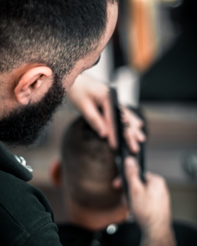
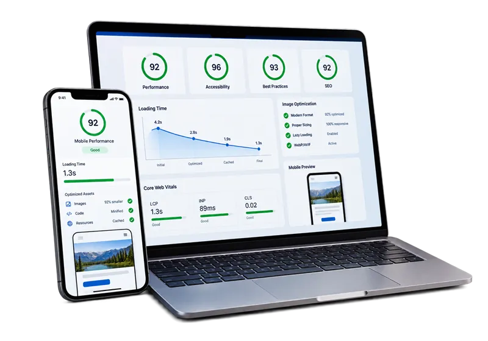

SEO local
Configuramos y ordenamos tu perfil de Google: categoría, horario, fotos, ubicación y reseñas.
PrecioCotizaciónConsultar ↗
POSICIONAMIENTO SEO
Trabajamos tu página y tu perfil de Google para que aparezcas cuando alguien de la zona busca lo que vendes. Sin trucos y sin promesas imposibles.

Empezamos por lo que más impacto tiene para un negocio local y seguimos desde ahí.
Configuramos y ordenamos tu perfil de Google: categoría, horario, fotos, ubicación y reseñas.
Títulos, textos, velocidad y estructura para que Google entienda qué ofreces.
Revisamos qué está frenando tu página en Google y te entregamos qué corregir.
La mayoría de tus clientes busca desde el celular y cerca de ti. Ahí ponemos el esfuerzo.
Perfil de Google completo para aparecer en búsquedas como “cerca de mí”.
Una página lenta pierde visitas. Optimizamos imágenes y código.
Escribimos lo que tus clientes buscan: servicios, zona, horarios y precios.
Te ayudamos a pedir y responder reseñas para generar confianza.

No es lo mismo posicionar una soda en Portegolpe que un hotel en Tamarindo. Te cotizamos después de revisar tu caso.
Vemos cómo apareces hoy y qué busca tu cliente.
Te decimos qué cambio tiene más impacto.
Ajustamos perfil, página y textos.
Revisamos el avance contigo.
No. Nadie puede garantizarlo porque Google decide los resultados. Lo que sí hacemos es poner tu negocio en las mejores condiciones para aparecer.
Depende de tu rubro y de la competencia en la zona. Los cambios en Google no son inmediatos; te explicamos qué esperar al revisar tu caso.
Para el SEO local basta con un buen perfil de Google, pero una página propia ayuda mucho. Nuestros planes web ya incluyen SEO básico o local.
Es la ficha que aparece en Google y Google Maps con tu horario, ubicación, fotos y reseñas.
Te orientamos sin compromiso y te decimos qué te conviene antes de cotizar.